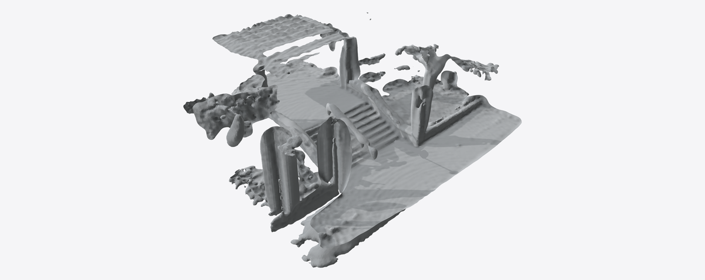
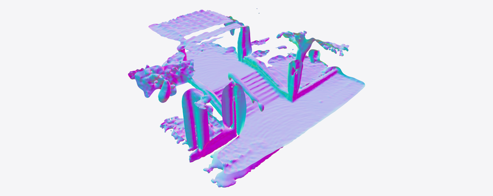
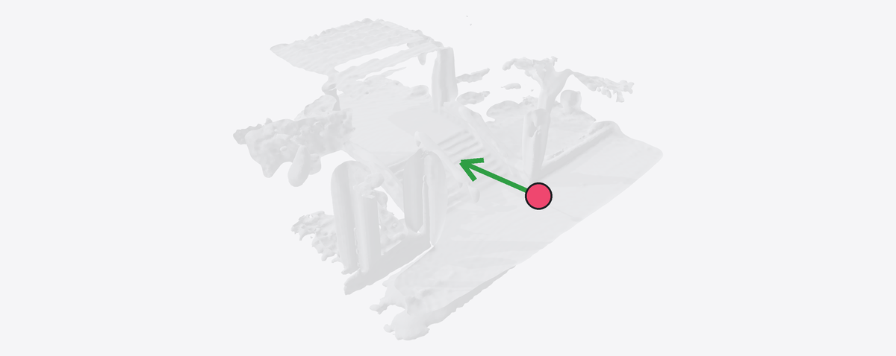
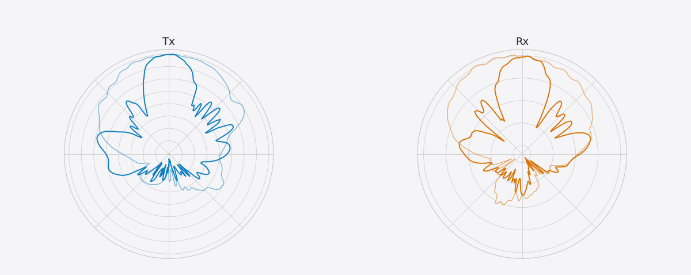
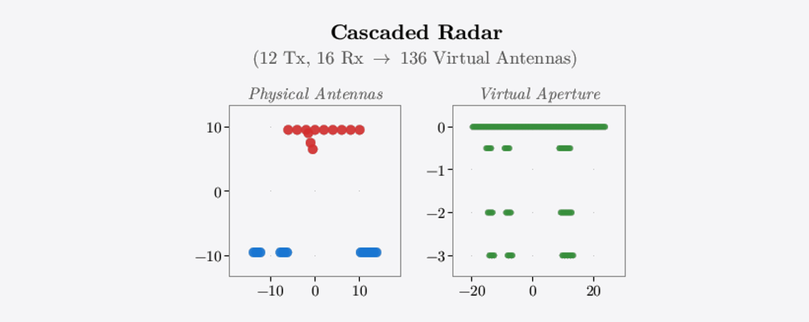
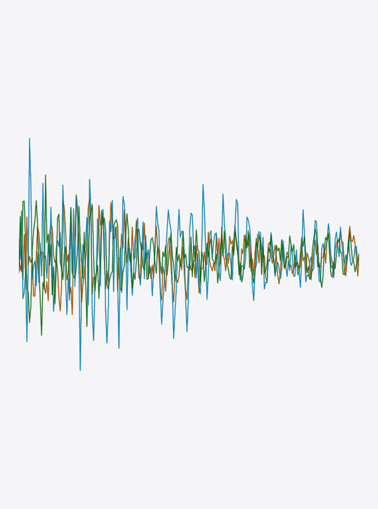
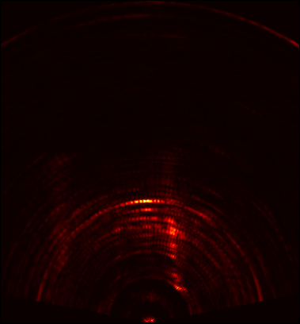
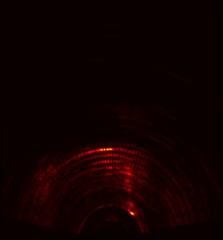

mmIR: Frequency-Space Inverse Rendering for 3D Millimeter-Wave Radar ADC Synthesis

Given a LiDAR mesh and ground-truth real cascaded-radar range–azimuth (RA) map, mmIR fits per-vertex materials, normals, and beam patterns, then re-renders a dense 100×100 virtual array for single-frame 3D occupancy.
Abstract
High-resolution 3D radar data is scarce. Commodity mmWave sensors use small antenna arrays that limit angular resolution to several degrees, and existing datasets provide only 2D range–azimuth maps or sparse point clouds rather than raw analog-to-digital converter (ADC) signals. Hardware scaling is expensive, synthetic-aperture scanning is impractical at fleet scale, and learned synthesis methods are bottlenecked by the very data shortage they aim to address. We present mmIR, an open-source differentiable frequency-modulated continuous-wave (FMCW) radar inverse renderer that fits a physics-based forward model to real captures and re-renders from dense virtual apertures to synthesize high-resolution 3D radar data. Because radar resolution is too coarse to recover geometry directly, mmIR performs LiDAR-assisted inverse rendering: using LiDAR-derived meshes as a geometric scaffold, mmIR optimizes per-vertex International Telecommunication Union (ITU) physics materials, vertex normals, and antenna beam patterns through end-to-end automatic differentiation of a phase-coherent multiple-input multiple-output (MIMO) forward model with multi-bounce propagation, polarization, and free-space diffraction. On seven outdoor and six indoor ColoRadar scenes, mmIR achieves 0.914 mean Pearson correlation on range–azimuth maps versus 0.307 for Sionna-RT. Scenes trained on a cascaded imaging radar transfer to a co-located single-chip radar without re-training (0.554 correlation), and dense virtual arrays (100×100 elements) produce single-frame 3D occupancy validated against LiDAR.
Method Overview: The Forward Model
mmIR optimizes explicit, independent representations of the scene and radar. A LiDAR mesh with per-vertex materials and normals describes the scene. The radar is described by its pose, measured beam patterns, and array layout. A differentiable ray tracer traces multi-bounce paths between them and sums their phase-delayed chirps into raw FMCW ADC samples.







The forward model traces phase-coherent multi-bounce paths for every TX–RX pair and synthesizes raw FMCW ADC from the independent, explicit scene and sensor representations. Automatic differentiation through ray tracing, BSDF, phasor accumulation, and ADC enables joint optimization of materials, normals, and beam patterns.
Training
The forward model runs inside a single computation graph. Gradients flow from a range-azimuth loss back through the ADC, the phasors, the BSDF, and the ray intersections to every learnable parameter. Below, we show one scene’s rendered map converging toward the real GT.


Results
Across seven outdoor ColoRadar scenes, mmIR reaches a mean correlation of 0.919 against real GT range-azimuth maps while Sionna-RT reaches 0.324. mmIR recovers the dominant scatterers and resolves both range and azimuth dimensions.

Rendered vs. measured range–azimuth maps across outdoor scenes.
3D Re-Renders Across Scenes
Because the scene and sensor representations are independent and explicit, the fitted scene can be frozen and re-rendered by a different radar, while consistent with the scene geometry and radar physics. A 100 × 100 virtual array resolves elevation as well as azimuth, so a single frame yields a high-resolution 3D point cloud with true elevation (top row). The real cascaded radar’s aperture spans azimuth alone, so it smears detections vertically (bottom row).
Dense 100×100 virtual arrays produce single-frame 3D occupancy across a range of scenes.